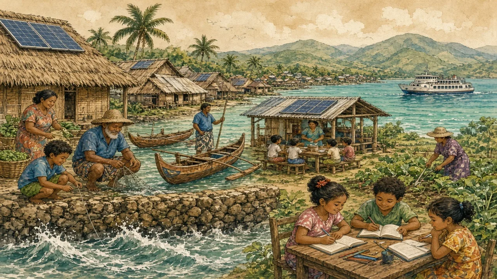

Pacific islands are not only beaches and holidays: they are homelands with schools, farms and governments — and many face rising seas.
Oceania · Islands & climate · Lesson 6 of 7
🌍 World map · ← Around the World: Oceania · 🌱 Easier version (A2) · ← Sport as a Way of Life: More Than Cricket and Surfing · The Flat White and the Café: A Surprising Coffee Culture →

Each new word is hidden in a sentence. Read it aloud and say what you think the bold word means from the rest of the sentence — then reveal it and see how close you were.
Read each part. After it, there's a quick comprehension check (try the questions from memory first), then one thing to discuss.
The Pacific includes more than a dozen independent countries, and many more territories. Fiji, with about 900,000 people, has universities, banks and a busy capital, while Tuvalu, with around eleven thousand, is made up of low coral atolls. Papua New Guinea, mostly mountains and rainforest, has more than eight hundred languages. Cultures are different too: Samoa and Tonga have strong chiefly traditions, Vanuatu has more than a hundred local languages, and Fiji has a large Indian-descended population. Many people combine subsistence farming and fishing with paid work, and tourism, tuna fishing licences and money sent home by relatives abroad provide much of the income. In Tonga, remittances are estimated to be around two-fifths of the economy.
1. How many languages does Papua New Guinea have?
2. Name two sources of income for island countries.
1. More than eight hundred.
2. For example tourism, tuna licences, remittances.
For low-lying countries such as Tuvalu and Kiribati, where the highest ground may be only a few metres above sea level, climate change is a daily concern. In parts of the western Pacific, the sea has been rising faster than the global average, and storms are likely to become stronger. High tides now flood roads and gardens, and salt water has contaminated freshwater wells and soil. Communities are responding: they are building sea walls, planting mangroves, raising houses and, in some cases, moving. In 2014, the village of Vunidogoloa in Fiji became one of the first to relocate to higher ground, and in 2023 Tuvalu and Australia signed a treaty giving Tuvaluans a pathway to live in Australia, while Tuvalu keeps its sovereignty.
1. How is the sea affecting freshwater?
2. What did Tuvalu and Australia agree in 2023?
1. Salt water is contaminating wells and soil.
2. A treaty giving Tuvaluans a pathway to live in Australia while Tuvalu keeps its sovereignty.
Pacific leaders have been among the loudest voices at international climate talks, arguing that the countries that have contributed least to global warming are among the most at risk. Many people say they do not want to be seen as victims, but as capable communities with knowledge and resilience, and some use the phrase “we are not drowning, we are fighting”. Young people may well play a decisive role: they are using social media and art to campaign, and many are training as engineers, scientists and lawyers. Whether islands can stay habitable is likely to depend as much on the emissions of larger countries as on local adaptation. Visitors can help by learning about the region as a whole, supporting local businesses and respecting local customs.
1. What do Pacific leaders argue at climate talks?
2. Why do many people reject the label “victims”?
1. That the countries that contributed least to warming are among the most at risk.
2. Because they see themselves as capable, resilient communities.
A stereotype and the reality rarely match. This lesson's grammar gives you the structure to describe the difference.
Complete each sentence about this topic.
1. More villages to relocate in the coming decades. (are likely / are unlikely)
2. Storms become stronger as the ocean warms. (are bound to / hardly)
3. Young people well lead the next stage of the campaign. (may / are)
1. are likely
2. are bound to
3. may
1. The islands to disappear in the next few years, but the risk is growing. (are unlikely / are certain)
2. Sea walls potentially protect the village, but they are expensive. (could / are)
3. Some communities are to leave their homes altogether. (likely / must)
1. are unlikely
2. could
3. likely
Hold on to this — you'll need it in the Speak tab.
“Paradise” is a nice label for a holiday brochure, but it makes it hard to see ordinary life: school runs, church on Sunday, election campaigns, families split between island and city. It also makes problems seem out of place. The climate threat on Pacific islands is not a distant future scenario; it is a present reality that communities are already managing. The islanders' own message is often that they are not asking for pity, but for action, and that they bring knowledge, such as traditional ways of reading the ocean and weather, that the rest of the world could learn from.
This is the heart of the lesson — do all of it out loud. The timer is there to keep you going: fill the time with detail rather than escaping it.
Explain life on a Pacific island today and the challenge of climate change, as if to a friend who sees them only as paradise. Move through the arc: not one island life → the sea comes closer → voices and choices.
Use today's grammar at least three times, and work in at least five key words (lagoon, sea level, remittance, subsistence, relocate, resilience, sovereignty, adaptation).
“Richer countries should pay for the damage that climate change causes in poorer ones.” Discuss.
Tell a story from your own world — work, family, the news — that connects to this topic. Stuck for an idea? Pick one of these and run with it:
🌍 World map · ← Around the World: Oceania · 🌱 Easier version (A2) · ← Sport as a Way of Life: More Than Cricket and Surfing · The Flat White and the Café: A Surprising Coffee Culture →